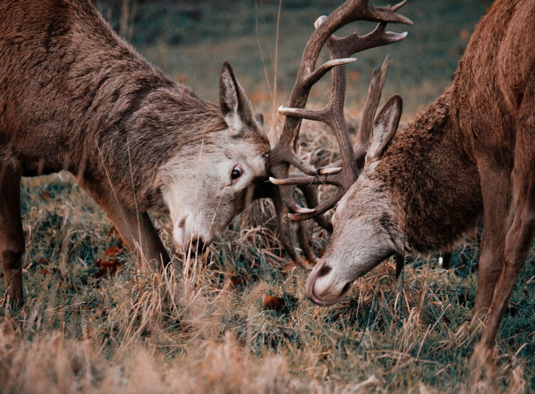
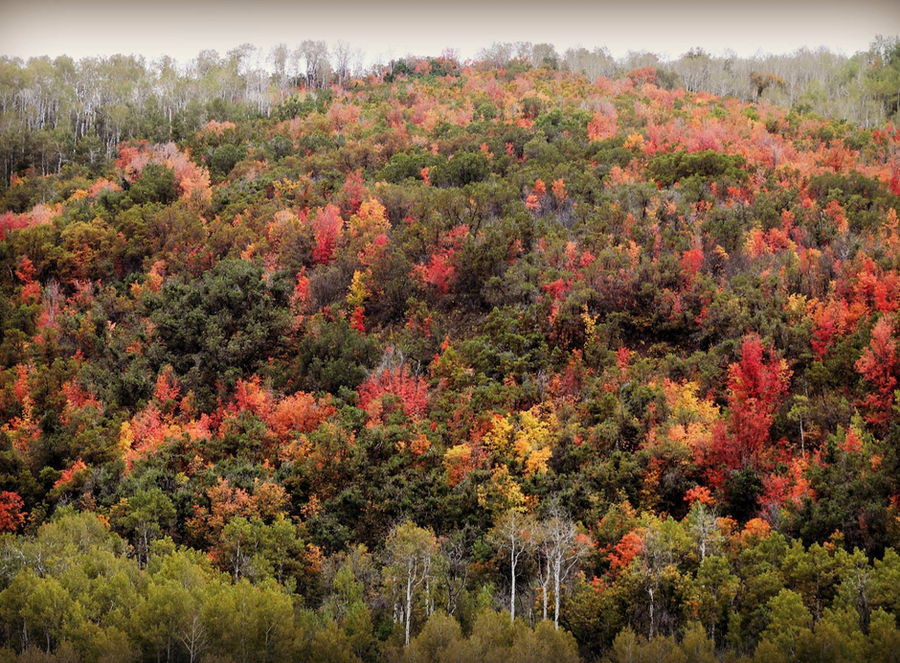
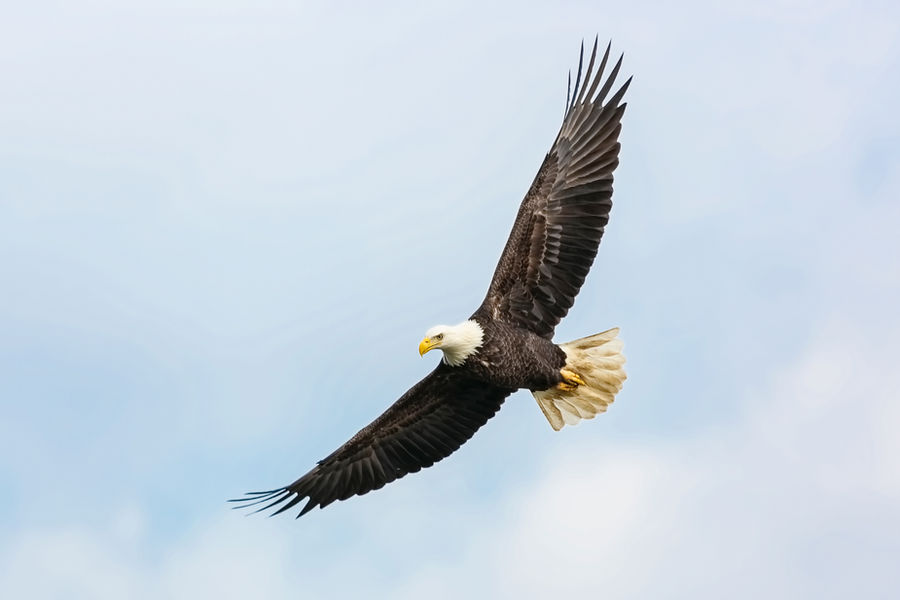
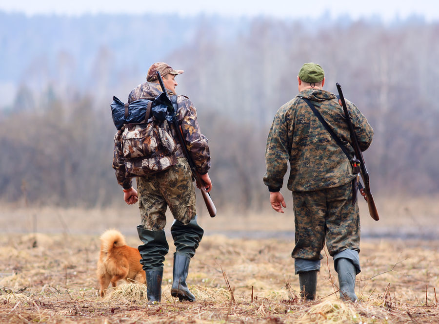

Wildlife

Mammals
The Resort maintains a wide variety of mammals including cougar, black bear, and little brown bats. Thirty-six species of mammals are listed with population estimates for September. Sixteen additional species are listed as potential and six species are listed as extirpated from the Resort.

Habitats
The Resort elevation is between 5,700 and 8,900 feet almost totally in Morgan County, Utah. Habitat types include Gambel Oak, Big Sagebrush, Riparian, Aspen, and Conifer.

Birds
The Resort supports a wide variety of native birds with 104 varieties listed. See the Field Checklist of the Birds at ECR for details.

Hunting
With prime summer habitat for mule deer, elk and moose, forest grouse and other game species as well as non-game species, hunting has been a major recreational activity of resort owners. Except for 1994 and 1995, when the Board elected to prohibit deer hunting primarily due to low numbers, hunting of deer has occurred annually. Elk, moose and small game have been hunted most years.